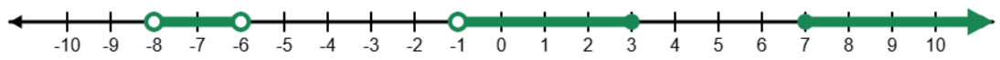

We often need to refer to ranges of values of a variable. For instance, we might ask "For which values of \(x\) is \(\sqrt{x}\) defined?"
We can answer this question in a few ways:
- In English: "When \(x\) is greater than or equal to zero" or "When \(x\) is at least zero"
- Using inequality symbols: "When \(x \geq 0\)"
- In interval notation: "For \(x \in [0,\infty)\)"
Which of these you use is largely a matter of preference: the goal is communication, so however you can communicate your solution most clearly is ideal. Some things to consider:
- English sometimes has multiple ways of expressing the same thing: some people like this, some don't. We just saw above an example: both "greater than or equal to" and "at least" are both represented by the inequality symbol \(\geq\), and likewise, "less than or equal to" and "at most" are both represented by the inequality symbol \(\leq\)
- Inequality symbols are great when the interval you're describing is relatively simple. However as things get more complicated, you may find yourself having difficulty. To describe using inequalities \[\text{The set of \(x\) between 3 and 5 (inclusive) or smaller than \(-2\)}\] one could say \[x < -2 \text{ or } (x \geq 3 \text{ and } x \leq 5)\] which could be written more simply as \[x < -2 \text{ or } 3 \leq x \leq 5\] Note that both English and the inequality symbols relied on the logical operators "or" and "and".
- Interval notation is often the neatest. In place of the logical operators "or" and "and", we have the set operations \(\cup\) (union) and \(\cap\) (intersection). The example above could be written as \[(-\infty,-2) \cup ([3,\infty) \cap (-\infty,5])\] or more simply as \[(-\infty,-2) \cup [3,5]\]
If the preceding didn't make sense to you, worry not: we now formally define the symbols above, together with a picture example.
In interval notation, we use round brackets to indicate that we include values up to but not including that endpoint. In terms of inequalities, this corresponds to strict inequality symbols \(<\) and \(>\). In a picture, we use an open dot (a circle which isn't filled in) to represent that the endpoint itself isn't included.
In interval notation, we use square brackets if we also include the endpoint, and in inequalities this corresponds to the less-than-or-equal-to and greater-than-or-equal-to symbols, \(\leq\) and \(\geq\). In a picture, we use a closed dot (a filled-in circle) to represent the inclusion of the endpoint.
In the case of positive or negative infinity, \(-\infty\) and \(\infty\), we always use round brackets in interval notation, and an arrow in a picture, to indicate that we continue indefinitely in that direction (since we can't actually reach that "endpoint", as infinity is not a number).
The union operation, \(A \cup B\) means that we include elements either set \(A\) or set \(B\), and the intersection operation, \(A \cap B\) means that we include elements which are in both the set \(A\) and the set \(B\) simultaneously (you can think of this as being where the two sets overlap).

In the above picture, in terms of inequalities, we have the set \[-8 < x < -6 \text{ or } -1 < x \leq 3 \text{ or } 7 \leq x\] or in interval notation, \[x \in (-8,-6) \cup (-1,3] \cup [7,\infty)\]
In interval notation, we use round brackets to indicate that we include values up to but not including that endpoint. In terms of inequalities, this corresponds to strict inequality symbols \(<\) and \(>\). In interval notation, we use square brackets if we also include the endpoint, and in inequalities this corresponds to the less-than-or-equal-to and greater-than-or-equal-to symbols, \(\leq\) and \(\geq\). The union operation, \(A \cup B\) means that we include elements either set \(A\) or set \(B\), and the intersection operation, \(A \cap B\) means that we include elements which are in both the set \(A\) and the set \(B\) simultaneously (you can think of this as being where the two sets overlap).
Now you try! In the first type of activity, you will be provided with a description of intervals (in either English, via inequalities, or interval notation), and tasked with placing them on a number line. In the second activity, you will be given a set of intervals on a number line, and tasked with describing them using either inequalities or interval notation. The parser for inequalities isn't the greatest, so it may reject legitimately correct answers which aren't formulated precisely as expected.